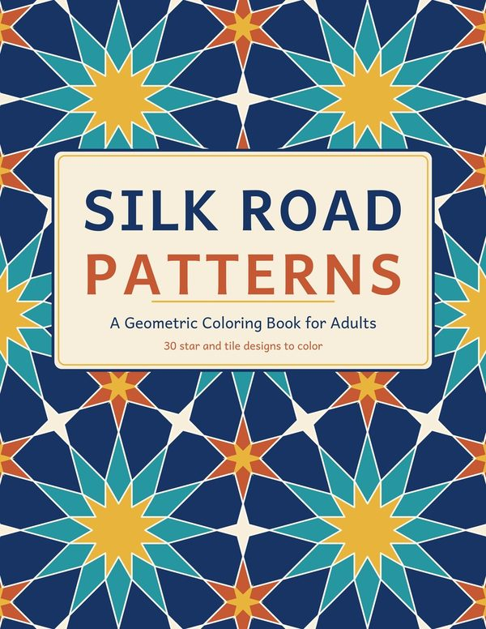
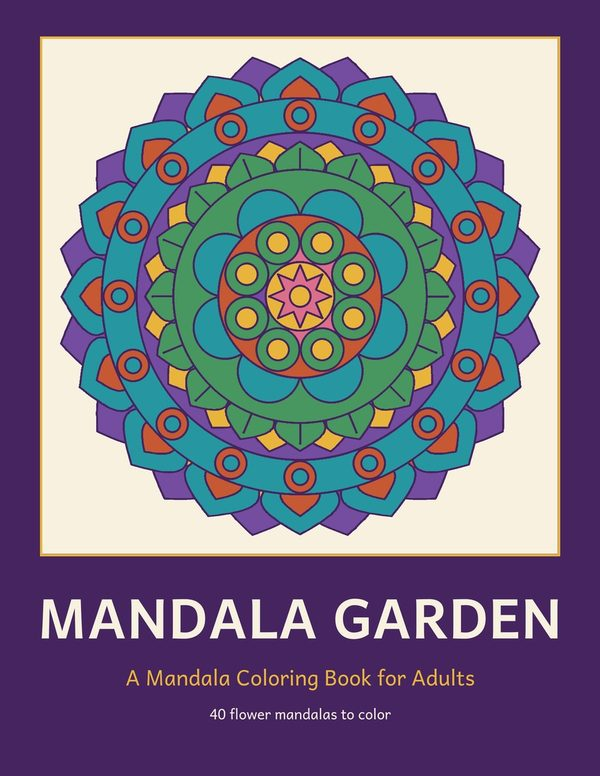
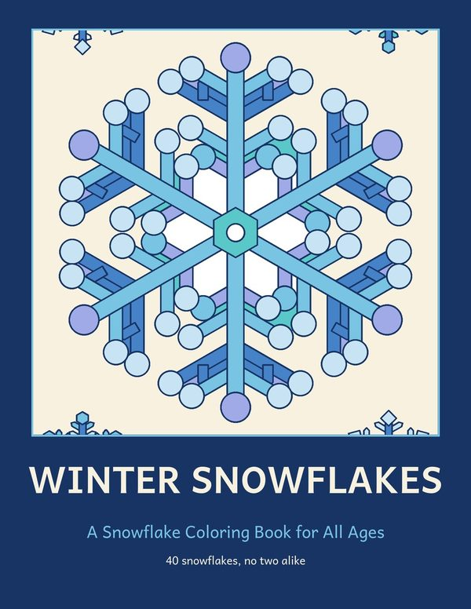
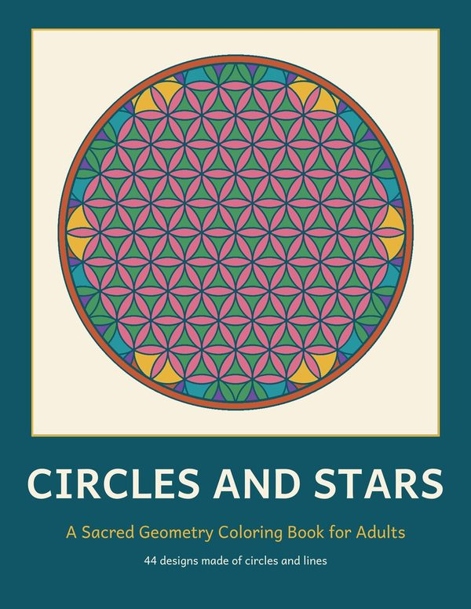
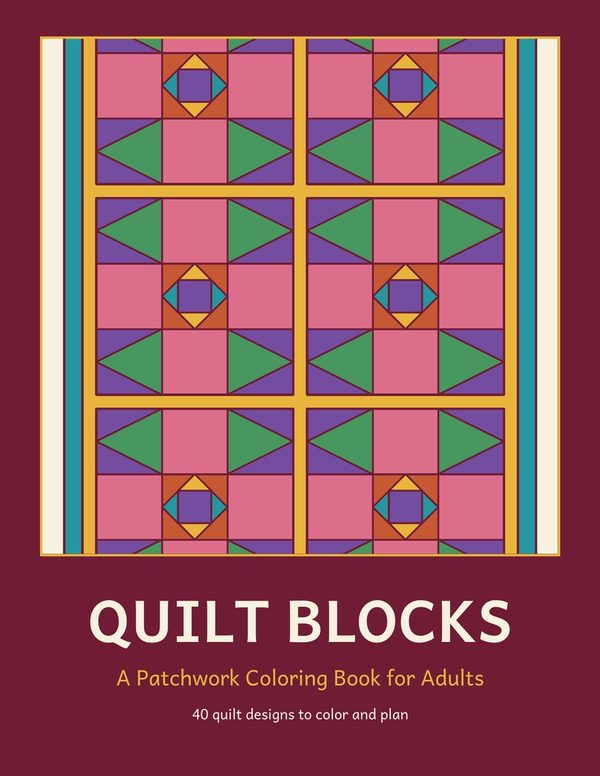
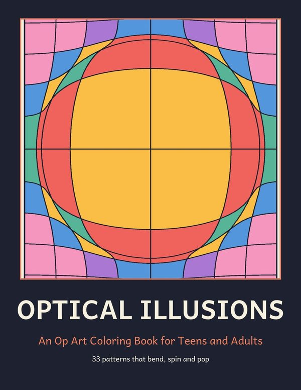
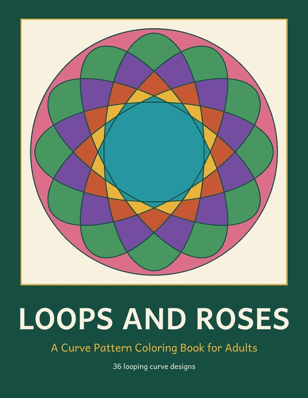
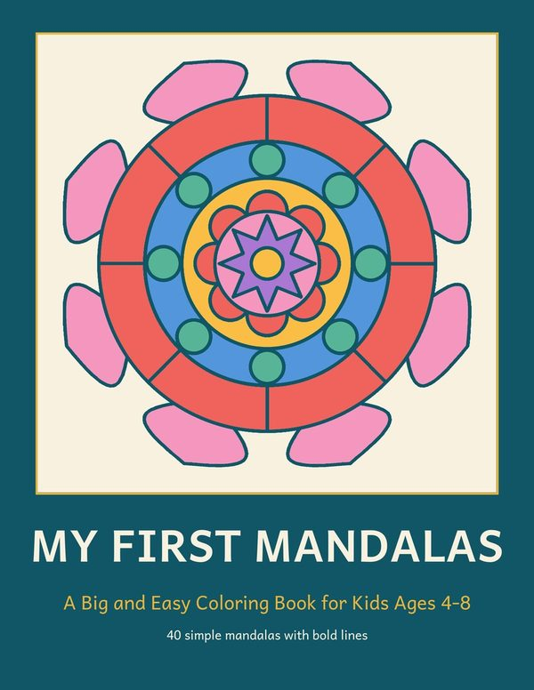
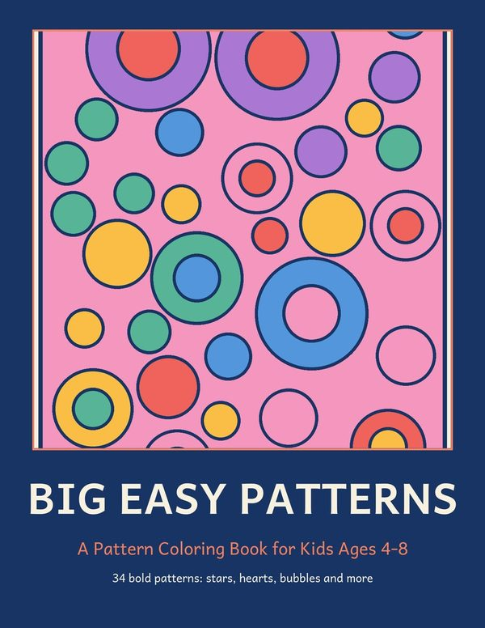
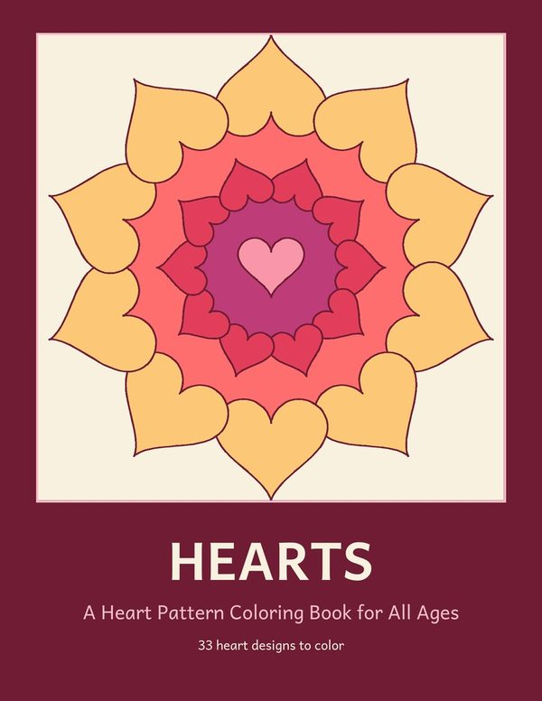

Silk Road Patterns
Adults · 30 designsThirty star and tile patterns inspired by the geometric ornaments of Central Asia.
On sale soon Free sample (PDF) →Patterns to color for adults and kids. Download a free sample of any book and print it at home.

Thirty star and tile patterns inspired by the geometric ornaments of Central Asia.
On sale soon Free sample (PDF) →
Forty original flower mandalas for slow, quiet coloring. Every design is built from rings of petals, circles and stars around a single center, so you can work from the middle out or from the edge in.
On sale soon Free sample (PDF) →
Forty large snowflakes, each one different, with four small flakes in the corners of every page. The outlines are bold and the shapes are roomy, so the book works for children and adults alike. A quiet winter and holiday activity.
On sale soon Free sample (PDF) →
Designs built with nothing but circles and straight lines: flower-of-life grids, rosettes, star polygons and spiraling polygons. Overlapping shapes make hundreds of small cells to fill with color.
On sale soon Free sample (PDF) →
Quilt layouts built from traditional patchwork shapes: stars, pinwheels, geese, rails and squares. Color them for the pleasure of it, or use the pages to test color schemes before you cut any fabric.
On sale soon Free sample (PDF) →
Op art patterns that seem to bulge, sink, spin and stack once you add color: warped grids, tunnels, spirals, wave fields and tumbling cubes. Two alternating colors are enough to make a page pop.
On sale soon Free sample (PDF) →
Designs drawn with looping curves that cross and re-cross to make petals, stars and woven rings, like the patterns of a drawing wheel toy. Wide open shapes sit next to fine, detailed cells.
On sale soon Free sample (PDF) →
Forty simple mandalas with thick lines and big shapes, made for children aged 4 to 8. No tiny corners: every area is easy to fill with crayons or chunky markers.
On sale soon Free sample (PDF) →
Bold, simple patterns for children aged 4 to 8: stars, hearts, bubbles, honeycombs, fish scales, waves and zigzags. Thick lines and big shapes make every page easy to finish.
On sale soon Free sample (PDF) →
Heart designs for every mood: heart mandalas, wreaths, walls of hearts and big hearts filled with patterns. A gift for Valentine's Day, Mother's Day, or anyone you love.
On sale soon Free sample (PDF) →